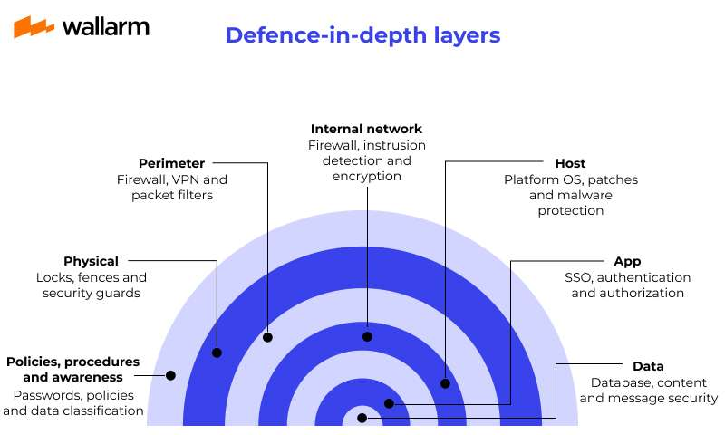
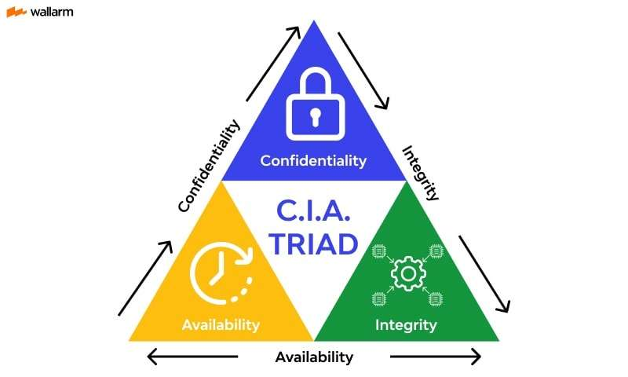

Ethical Hacking
A Business Perspective for SMEs.
1. Introduction
In today's society, information is highly valuable, making cybersecurity fundamental. This project analyzes ethical hacking not just as a technical tool, but as a business strategy to identify and correct vulnerabilities before they are exploited.
Key Concepts:
| Concept | Definition |
|---|---|
| Pentesting | Method of penetrating digital components to test security. |
| Vulnerability | A weakness in an attack vector that can be exploited. |
| Threat Hunting | Technical procedures to detect inside threats. |
2. Prevention Tools
Ethical hacking is an eternal cycle: Prevention, Detection, and Response. The most important part is reducing the attack surface using specific hardware and software layers:
| Tool | Function |
|---|---|
| Firewall | Controls traffic based on "Allow/Deny" rules. |
| IPS | Blocks malicious traffic using Deep Packet Inspection. |
| EDR | Detects and responds to advanced attacks (Ransomware). |
| CASB | Protects data in Cloud services (SaaS). |
3. Future & Ethics
The future is driven by Artificial Intelligence and the democratization of security. However, every ethical hacker must adhere to the fundamental principles of the CIA Triad:
Confidentiality: Access only for authorized users.
Integrity: Guaranteeing no manipulated data.
Availability: Information accessible when needed.
4. Full Research & References
This web page is a summary of a comprehensive research project conducted by Group 5. You can access the full document and the official sources used below.